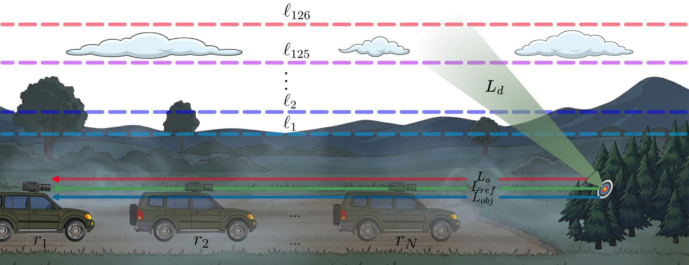
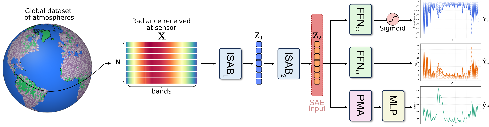
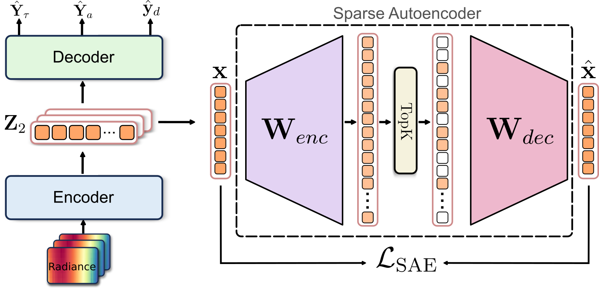
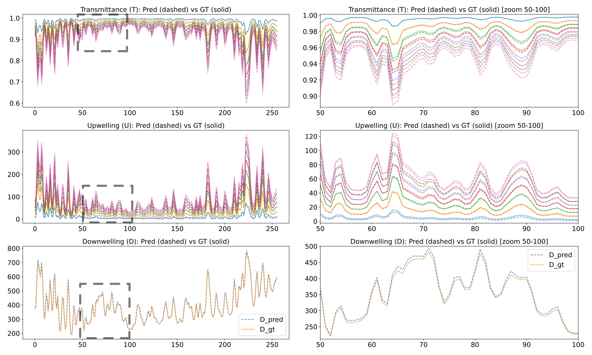
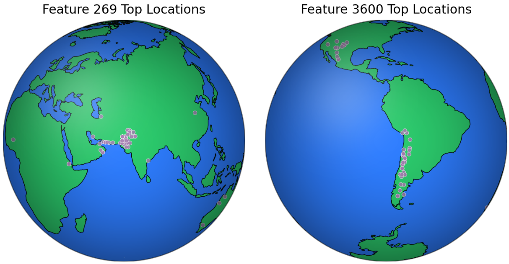

TL;DR: We propose a lightweight set-based deep learning framework that takes multiple radiance measurements at different standoff ranges as input and jointly estimates transmittance, atmospheric path radiance, and a shared downwelling spectrum for atmospheric compensation in passive LWIR hyperspectral imaging.
Presentation Video
Passive long-wave infrared (LWIR) hyperspectral imaging under a standoff geometry depends on atmospheric absorption and emission, as well as reflected radiance, thus making atmospheric compensation essential to get knowledge of a target of interest. Despite its importance, this compensation has been largely overlooked due to its practical and modeling difficulty. In this paper, we present a lightweight set-based deep learning framework that takes multiple radiance measurements, collected at different standoff ranges, as input and jointly estimates transmittance, atmospheric path radiance, and a shared downwelling spectrum. We analyze the learned representation with a sparse autoencoder and observe that several latent features do activate on geographically coherent subsets of the test data despite the absence of location supervision. Experiments on a MODTRAN generated standoff LWIR dataset demonstrate low spectral distortion across all estimated products. The dataset and code will be made publicly available.

To analyze the learned representations, we train a sparse autoencoder on frozen encoder activations \(Z_2\). The SAE uses TopK gating with \(M = 3072\) features (\(12 \times d\)) and \(k = 16\), reconstructing token activations via an overcomplete sparse dictionary to expose physically meaningful latent structure.


Predicted (dashed) and ground-truth (solid) spectra for transmittance \(Y_\tau\), atmospheric path radiance \(Y_a\), and downwelling \(y_d\) across the LWIR window. The left column shows the full spectral range while the right column provides a zoomed view, highlighting that the network preserves fine-grained spectral structure.

Top-activating locations for two SAE features. Each point denotes a test sample among the highest activations. For multiple features, the highest-activation examples consistently correspond to radiance sets originating from highly similar geographic regions, despite the fact that the network is never provided with explicit location. This emergent behavior suggests that the model organizes features by clustering atmospheres with similar physical conditions.
If you find this work useful, please cite our paper:
@inproceedings{perez2026settransformer,
title={Set-Based Transformer for Atmospheric Compensation in Standoff LWIR Hyperspectral Imaging},
author={Perez, Fabian and Quintero, Nicolas and Acevedo, Jeferson and Rueda-Chac{\'o}n, Hoover},
booktitle={IEEE International Geoscience and Remote Sensing Symposium (IGARSS)},
year={2026}
}
This website is licensed under a Creative Commons Attribution-ShareAlike 4.0 International License.
We borrow the source code for our website. We sincerely appreciate DreamFusion authors for their awesome templates.